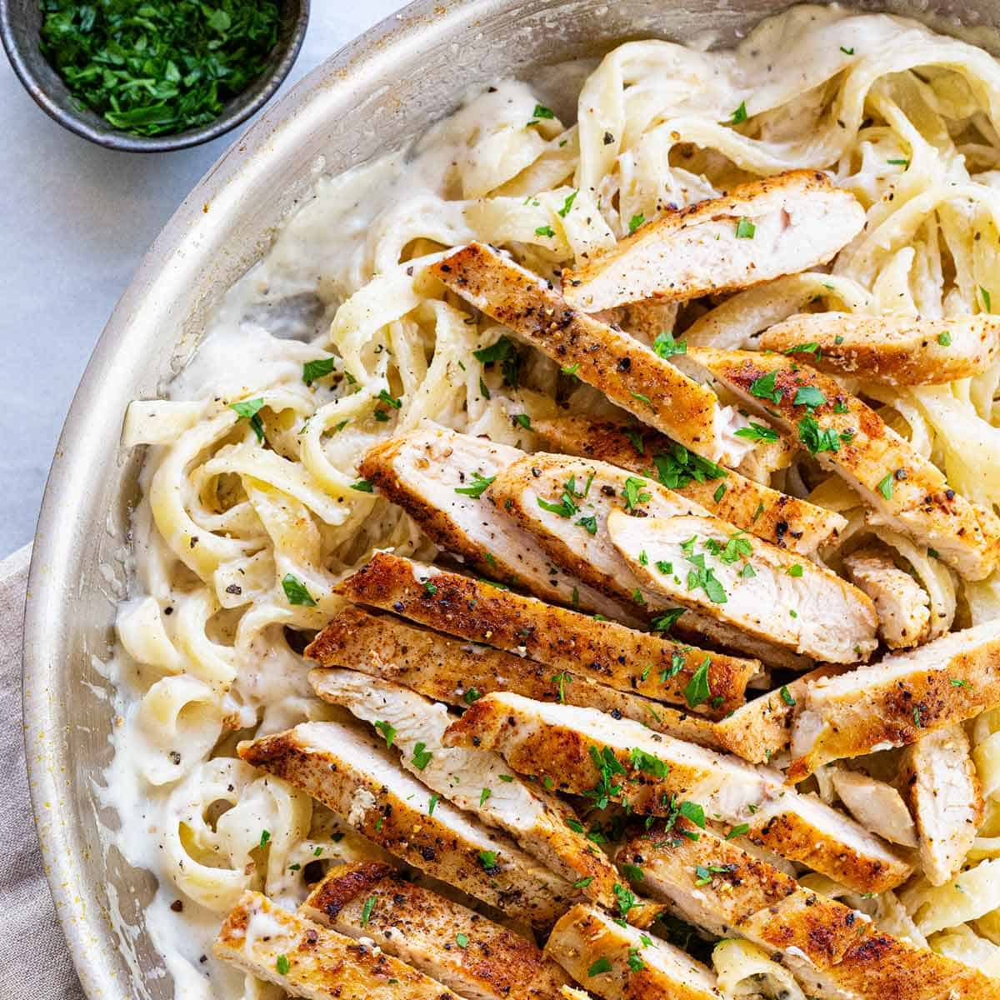

Oh, chicken alfredo: It's the classic pseudo-Italian pasta we just can't seem to get enough of. Of course there are tons of jarred pasta sauces you can buy, but making alfredo sauce from scratch is actually so easy. This is a great base recipe for all your one-pot pasta needs.
- 1 (16 ounce) package refrigerated cheese tortellini
- 1 tablespoon vegetable oil
- 4 skinless, boneless chicken breast halves, cubed
- 3 tablespoons butter
- ½ pound sliced fresh mushrooms
- 1 pinch garlic powder, or to taste
- 2 cups heavy whipping cream
- ⅓ cup grated Parmesan cheese
- 3 tablespoons chopped fresh parsley
- 1 teaspoon salt
- Bring a large pot of lightly salted water to a boil. Add tortellini. Cook, stirring occasionally, until tortellini float to the top and the filling is hot, about 5 minutes. Drain.
- Heat vegetable oil in a large skillet over medium heat; cook and stir chicken breast in hot oil until no longer pink in the center, about 10 minutes. Remove from heat.
- Melt butter in another skillet over medium heat; cook and stir mushrooms and garlic powder until mushrooms begin to soften, about 3 minutes. Stir heavy cream into mushrooms and bring to a boil. Reduce heat to medium-low and simmer until slightly thickened, about 3 minutes. Add Parmesan cheese, parsley, and salt. Continue to cook until cheese is melted, about 1 minute.
- Stir tortellini and chicken into mushroom-cream sauce. Simmer until heated through, about 2 minutes.